Implemented Features
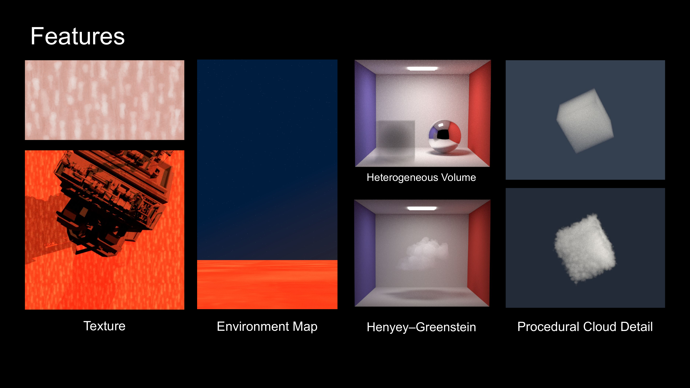
This project implements texture, environment lighting, heterogeneous participating media, and procedural cloud-detail support. The final scene is defined in scenes/a4/cbox/cloud_1_color_1_1.xml. It combines textured geometry, a procedural infinite environment, directional lighting, and a heterogeneous cloud volume.
| Feature | Implementation summary | Main files |
|---|---|---|
| Texture | Bitmap texture lookup for diffuse materials using OBJ UVs, UV scaling, repeat wrapping, tinting, and bilinear filtering. The final scene uses textured_diffuse_lowbounce on the floor. |
src/diffuse.cpp, include/nori/bsdf.h |
| Environment lighting | HDR latitude-longitude envmap emitter with importance sampling, plus a procedural infinite emitter with gradient sky and stars. The final scene uses infinite plus directional lighting. |
src/envmap.cpp, src/infinite.cpp, src/directional.cpp, src/scene.cpp |
| Heterogeneous volume | Dense .grid medium loading, medium-local bounds intersection, trilinear density lookup, density-scaled \(\sigma_a\), \(\sigma_s\), \(\sigma_t\), delta tracking, and volumetric path tracing. |
src/medium.cpp, include/nori/medium.h, src/voxelgrid.cpp, src/volume_query.cpp, src/path_mis_vol.cpp, src/phase.cpp |
| Procedural cloud detail | Procedural fBM/Worley cloud shaping baked into a runtime density grid for standard heterogeneous-medium lookup. Validated separately with controlled procedural scenes. | src/medium.cpp, include/nori/medium.h |
Feature Validation: Texture
Test Scene
Scene:
I rendered a single square mesh with explicit UV coordinates from \((0, 0)\) to \((1, 1)\). The camera faces the square directly, and the scene uses the direct integrator with strategy = bsdf, which executes the BSDF-sampling branch in src/direct.cpp. The square uses the textured_diffuse BSDF, so the sampled diffuse response comes from the bitmap texture lookup.
Texture:
The validation texture is a checkerboard EXR bitmap. The scene uses uScale = 4, vScale = 4, repeat = true, and flipV = true.
Lighting model: The scene uses a constant white infinite environment and the direct integrator with BSDF sampling.
Validation
Reference method: I rendered an equivalent validation scene in Mitsuba 3.8.0 using the same UV-mapped plane, same EXR checkerboard texture, same camera resolution and field of view, diffuse material, bilinear bitmap filtering, repeated wrapping, and constant white environment lighting. The Nori EXR was then compared against the Mitsuba reference EXR pixel by pixel in linear RGB.
The metrics below were computed from linear EXR outputs before tone mapping.
Image-space comparison:
| Validation case | MSE | MAE | Max error |
|---|---|---|---|
| Checkerboard texture plane | 5.029551903e-05 | 0.004321577493 | 0.06343209743 |
Reference Render Comparison Images
|
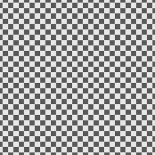 Mitsuba reference |
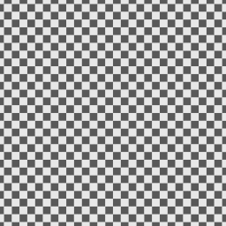 Nori output |
Per-pixel MSE |
Conclusion
The low error shows that the renderer's texture path matches an independently rendered Mitsuba reference. The remaining error is concentrated near checker boundaries, where small differences in pixel sampling and reconstruction are expected. This validates the OBJ UV interpolation, UV scale/repeat behavior, vertical convention, and bilinear bitmap filtering used by the textured diffuse BSDF.
Supplementary files:
- Nori validation scene:
final-report/validation/texture/texture_validation.xml - Mitsuba reference scene:
final-report/validation/texture/mitsuba_texture_validation.xml - Shared UV test mesh:
final-report/validation/texture/texture_validation_plane.obj - Shared checkerboard texture:
final-report/validation/texture/pbrt_checkerboard_texture.exr - Comparison script:
final-report/validation/texture/texture_validation_reference_and_compare.py - Mitsuba output:
final-report/validation/texture/output/mitsuba_output.exr - Nori output:
final-report/validation/texture/output/nori_output.exr - Per-pixel MSE image:
final-report/validation/texture/output/mse_error.exr - Metrics:
final-report/validation/texture/output/metrics.txt
Feature Validation: Environment Lighting
Test Scene
Empty environment-map scene:
I rendered empty scenes with a perspective camera and a bitmap latitude-longitude environment map. Since there is no geometry, every camera ray misses the scene and directly returns environment radiance through src/direct.cpp, Scene::environmentLe(), and EnvmapEmitter::Le() in src/envmap.cpp. This validates the camera-visible lookup/evaluation path of the environment map. The renderer already has a fixed ray direction in this case, so this path performs a direction-to-UV lookup and does not use importance sampling.
Diffuse Ajax scene:
I also rendered a diffuse Ajax bust scene lit by the autumn_field_puresky_4k environment map. This scene checks the same environment map with visible geometry. Nori uses the direct integrator with its default MIS strategy, while Mitsuba uses its direct integrator with one emitter sample and one BSDF sample. In Nori, this exercises the direct-lighting path where the surface integrator calls EnvmapEmitter::sample() to choose an environment direction, then uses EnvmapEmitter::pdf() for MIS weighting.
Infinite gradient scene:
I rendered another empty scene using the infinite emitter in gradient mode with stars disabled. This scene validates src/infinite.cpp, which is separate from the bitmap envmap implementation and is the environment type used by the final render.
Validation
Reference method:
I rendered equivalent environment-map scenes in Mitsuba 3.8.0 and compared the Nori EXR outputs against Mitsuba reference EXRs pixel by pixel in linear RGB. For the empty scenes, both renderers use the same EXR maps, camera resolution, field of view. The Mitsuba environment map is rotated by \(-90^\circ\) around the Y axis so that Mitsuba's latitude-longitude convention matches the convention used by src/envmap.cpp. This comparison directly validates the direction-to-UV mapping, EXR lookup, wrapping, clamping, and filtering behavior of the bitmap envmap path.
The Ajax scene uses the same autumn_field_puresky_4k environment map with a diffuse material in both renderers. The Nori and Mitsuba integrators are not identical implementations, so the Ajax error is expected to be higher than the empty-scene error, but it still provides a quantitative check that the environment emitter contributes plausible direct lighting in a full scene.
For the infinite emitter, I used an analytic reference instead of Mitsuba. The reference script reconstructs each camera ray direction and evaluates the same gradient formula as src/infinite.cpp. First, it computes the raw interpolation coordinate:
\[t_\mathrm{raw} = 0.5(\mathbf{d}\cdot\mathbf{a} + 1),\]
where \(\mathbf{d}\) is the normalized camera-ray direction and \(\mathbf{a}\) is the normalized gradient axis. This maps the dot-product range \([-1,1]\) to \([0,1]\), so rays opposite the axis use the bottom color and rays aligned with the axis use the top color. The implementation then applies the configured offset, width, and power:
\[t = \mathrm{clamp}\left(\frac{t_\mathrm{raw} + o - 0.5}{w} + 0.5, 0, 1\right)^\gamma,\]
where \(o\) is gradientOffset, \(w\) is gradientWidth, and \(\gamma\) is gradientPower. The final camera-visible radiance is:
\[L(\mathbf{d}) = (1-t)L_\mathrm{bottom} + tL_\mathrm{top}.\]
This directly validates the camera-visible gradient path Scene::environmentLe() -> InfiniteEmitter::Le().
The metrics below were computed from linear EXR outputs before tone mapping.
Image-space comparison:
| Validation case | MSE | MAE | Max error |
|---|---|---|---|
Empty scene, autumn_field_puresky_4k |
1.688310476e-05 | 0.002062933054 | 0.7156405449 |
Empty scene, qwantani_afternoon_puresky_4k |
2.660560085e-06 | 0.0007420147886 | 0.3169791996 |
Diffuse Ajax scene, autumn_field_puresky_4k |
0.000464167766 | 0.006819978356 | 0.4291228056 |
| Infinite gradient | 7.924815804e-10 | 1.87109672e-05 | 0.0001585781574 |
Reference Render Comparison Images
autumn_field_puresky_4k
|
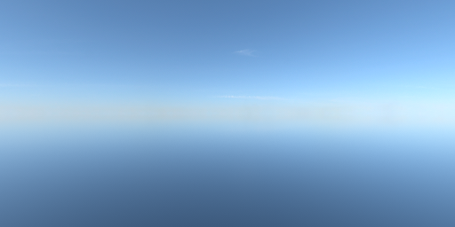 Mitsuba reference |
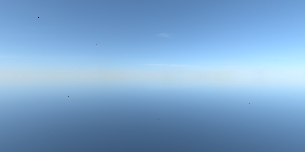 Nori output |
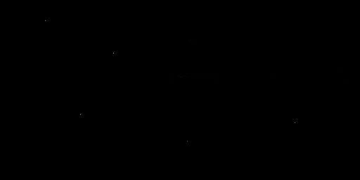 Per-pixel MSE |
qwantani_afternoon_puresky_4k
|
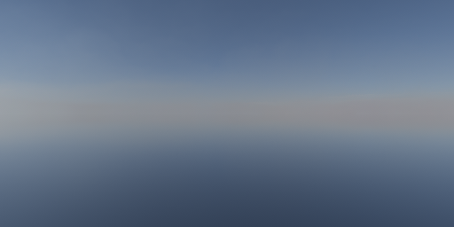 Mitsuba reference |
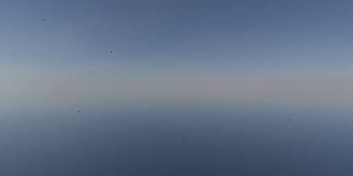 Nori output |
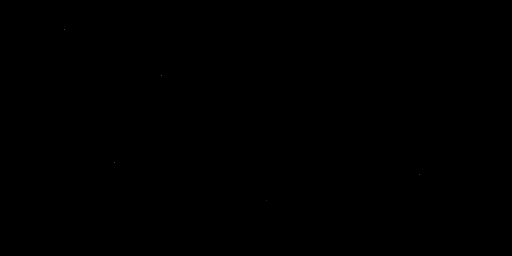 Per-pixel MSE |
Diffuse Ajax scene with autumn_field_puresky_4k
|
Mitsuba reference |
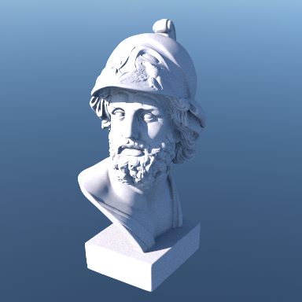 Nori output |
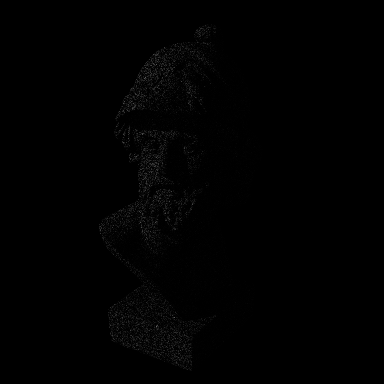 Per-pixel MSE |
Infinite gradient
|
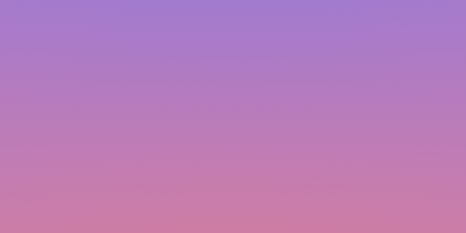 Analytic reference |
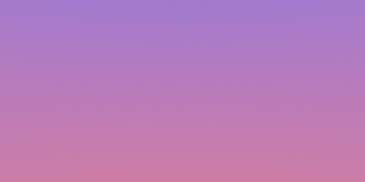 Nori output |
Per-pixel MSE |
Conclusion
The low error in the empty-scene tests shows that the renderer's bitmap environment path matches an independently rendered Mitsuba reference. This validates the camera-visible environment lookup path, latitude-longitude direction mapping, EXR bitmap lookup, horizontal wrapping, vertical clamping, bilinear filtering, and scale handling in src/envmap.cpp. The Ajax scene provides an additional check that the same environment map also behaves correctly when lighting visible diffuse geometry. The analytic infinite-gradient test validates the separate infinite emitter used by the final render.
Supplementary files:
- Nori validation scene:
final-report/validation/envmap/envmap_validation_autumn.xml - Nori validation scene:
final-report/validation/envmap/envmap_validation_qwantani.xml - Mitsuba reference scene:
final-report/validation/envmap/mitsuba_envmap_validation_autumn.xml - Mitsuba reference scene:
final-report/validation/envmap/mitsuba_envmap_validation_qwantani.xml - Shared EXR environment map:
final-report/validation/envmap/env/autumn_field_puresky_4k.exr - Shared EXR environment map:
final-report/validation/envmap/env/qwantani_afternoon_puresky_4k.exr - Comparison script:
final-report/validation/envmap/envmap_validation_reference_and_compare.py - Autumn Mitsuba output:
final-report/validation/envmap/output/autumn_field_puresky_4k/mitsuba_output.exr - Autumn Nori output:
final-report/validation/envmap/output/autumn_field_puresky_4k/nori_output.exr - Autumn per-pixel MSE image:
final-report/validation/envmap/output/autumn_field_puresky_4k/mse_error.exr - Autumn metrics:
final-report/validation/envmap/output/autumn_field_puresky_4k/metrics.txt - Qwantani Mitsuba output:
final-report/validation/envmap/output/qwantani_afternoon_puresky_4k/mitsuba_output.exr - Qwantani Nori output:
final-report/validation/envmap/output/qwantani_afternoon_puresky_4k/nori_output.exr - Qwantani per-pixel MSE image:
final-report/validation/envmap/output/qwantani_afternoon_puresky_4k/mse_error.exr - Qwantani metrics:
final-report/validation/envmap/output/qwantani_afternoon_puresky_4k/metrics.txt - Supplemental Nori scene:
final-report/validation/envmap/ajax-envtest/ajax_envmap_autumn.xml - Supplemental Mitsuba scene:
final-report/validation/envmap/ajax-envtest/mitsuba_ajax_envmap_autumn.xml - Supplemental comparison script:
final-report/validation/envmap/ajax-envtest/ajax_envmap_reference_and_compare.py - Supplemental outputs:
final-report/validation/envmap/ajax-envtest/output/ - Infinite gradient validation scene:
final-report/validation/envmap/infinite_gradient_validation.xml - Infinite gradient comparison script:
final-report/validation/envmap/infinite_gradient_validation.py - Infinite gradient outputs:
final-report/validation/envmap/output/infinite_gradient/
Feature Validation: Heterogeneous Volume
Test Scene
Statistical test scene:
I added a headless C++ validation executable volume_stat_test. It directly calls the renderer's volume implementation. The test constructs a real Medium and VolumeQuery using an analytic heterogeneous test density:
- Density layout:
Medium::testDensity()returns0.25in the first half of the ray segment and0.75in the second half - \(\sigma_a = 0.25\), then scaled by local density
- \(\sigma_s = 0.75\), then scaled by local density
- \(\sigma_t = \sigma_a + \sigma_s = 1.0\), then scaled by local density
- Majorant:
0.9 - Phase function: dual Henyey-Greenstein,
g1 = 0.85,g2 = -0.15,phaseWeight = 0.65
The tested ray travels through the unit volume along the heterogeneous density direction.
Statistical Validation
C++ implementation under test: The statistical tests directly call the following C++ code paths:
DualHenyeyGreensteinPhaseFunction::sample()andDualHenyeyGreensteinPhaseFunction::pdf()insrc/phase.cppMedium::density()andMedium::pointRecordAtP()insrc/medium.cppVolumeQuery::sampleMediumInteraction()insrc/volume_query.cpp
Chi-square method:
Each test follows the same high-level procedure as Nori's existing warptest in Assignment 2. I call the actual C++ sampler many times, place each returned sample into a bin, and obtain observed counts \(O_i\). I then compute expected counts \(E_i\) from the corresponding reference distribution for that test. The details of those reference distributions are described in the three test-specific sections below.
The chi-square statistic measures how far the observed counts are from the expected counts:
\[\chi^2 = \sum_i \frac{(O_i - E_i)^2}{E_i}\]
The statistic is converted to a p-value using the chi-square distribution. I use a significance threshold of \(\alpha = 0.01\): a test passes when its p-value is above this threshold, meaning the observed histogram is statistically consistent with the expected distribution. For visualization, I plot the observed counts against the expected counts used by each test.
Statistical test summary:
| Statistical test | Samples | Bins | Expected distribution | p-value | Result |
|---|---|---|---|---|---|
| DHG phase sampling | 200000 | 200 | DHG phase PDF | 0.64453151695 | Pass |
| Heterogeneous first-event distance | 200000 | 33 | \(\sigma_t(t)\exp(-\tau(t))\) plus escape bin | 0.444887497187 | Pass |
| Scatter vs absorb classification | 79116 accepted events | 2 | \(\sigma_s / \sigma_t = 0.75\), \(\sigma_a / \sigma_t = 0.25\) | 0.799090694021 | Pass |
DHG phase sampling:
The final scene uses a dual Henyey-Greenstein phase function, so I tested whether sampled scattering directions match the phase-function PDF used for throughput and MIS weighting. In this test, \(\omega_o\) is fixed to the outgoing/view direction and \(\omega_i\) is the sampled scattering direction returned by DualHenyeyGreensteinPhaseFunction::sample().
Directions are binned using \((\cos\theta, \phi)\). Let \(\Omega_i\) be the \(i\)-th spherical direction bin, let \(f_p\) be the dual Henyey-Greenstein phase function, and let \(N\) be the total number of sampled directions. The expected count for that bin is:
\[E_i = N \int_{\Omega_i \subset S^2} f_p(\omega_o,\omega_i)\,d\omega = N \int_{\cos\theta_0}^{\cos\theta_1} \int_{\phi_0}^{\phi_1} f_p(\omega_o,\omega_i(\cos\theta,\phi))\,d\phi\,d(\cos\theta).\]
The second equality uses the solid-angle measure \(d\omega = d\phi\,d(\cos\theta)\), so no extra \(\sin\theta\) factor is needed when integrating in \((\cos\theta,\phi)\) coordinates. In code, this reference density is evaluated by DualHenyeyGreensteinPhaseFunction::pdf().
This test checks the consistency of the two phase-function operations used by the renderer: directions generated by sample() should follow the density reported by pdf(). The test passed with p-value 0.64453151695.
This p-value is reasonable because the observed and expected heatmaps have similar color distributions, and the remaining differences look like ordinary Monte Carlo fluctuation across the 200 direction bins. This validates that DualHenyeyGreensteinPhaseFunction::sample() and DualHenyeyGreensteinPhaseFunction::pdf() are statistically consistent with each other.
|
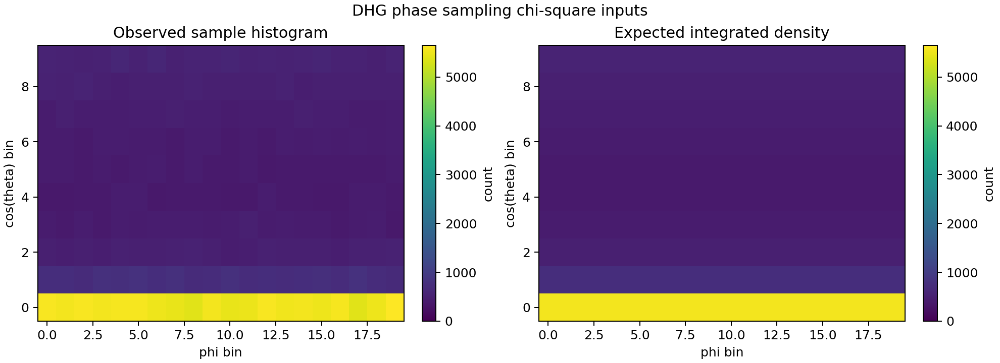 Observed vs expected phase bins |
Heterogeneous delta tracking:
For the analytic piecewise heterogeneous density, the reference distribution comes from the standard first-event distribution along the tested ray segment \([0,L]\). Here \(t\) is distance along the ray, and \(\sigma_t(t)\) is the density-scaled local extinction evaluated from Medium::density() and Medium::pointRecordAtP(). The optical depth from the ray start to distance \(t\) is:
\[\tau(t) = \int_0^t \sigma_t(s)\,ds.\]
The corresponding transmittance, or probability of no real event before distance \(t\), is:
\[T(t) = \exp(-\tau(t)).\]
Therefore, the probability density that the first real medium event occurs exactly at distance \(t\) is:
\[p(t) = \sigma_t(t)T(t) = \sigma_t(t)\exp(-\tau(t)).\]
For a distance bin \([t_0,t_1]\), the expected count is:
\[E_i = N\int_{t_0}^{t_1} p(t)\,dt.\]
If no real event occurs before the end of the segment, the sample falls into the escape bin. Its expected count is:
\[E_\mathrm{escape} = N T(L) = N\exp(-\tau(L)).\]
The C++ test repeatedly called VolumeQuery::sampleMediumInteraction() and recorded either the first accepted event distance or the escape event. This validates the combined behavior of heterogeneous density lookup, local coefficient construction, null-collision delta tracking, and transmittance/no-collision probability. The observed event-distance histogram passed the chi-square test against the analytic heterogeneous distribution with p-value 0.444887497187.
The large escape bin is expected for this scene. The test density is 0.25 for the first half of the ray and 0.75 for the second half, so the total optical thickness is approximately \(\tau(L) = 0.5\). The expected no-event probability is therefore \(P(\mathrm{escape}) = \exp(-0.5) = 0.6065\), meaning about 60% of the 200000 samples should escape without a real collision.
|
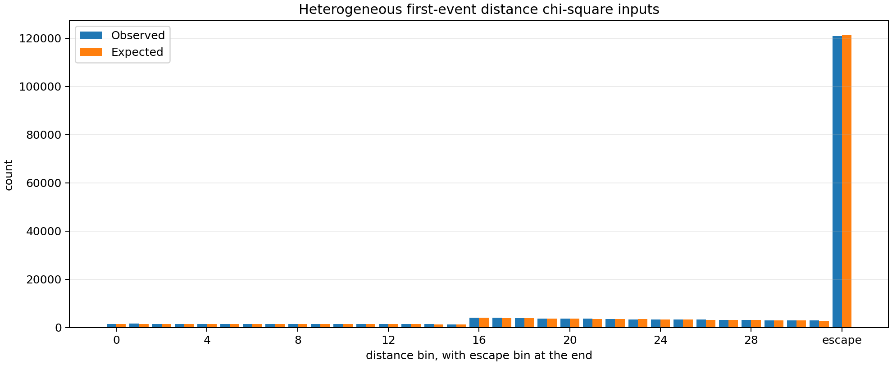 Observed vs expected distance / escape bins |
Scatter vs absorb classification:
After a real medium event is accepted, the implementation chooses scatter versus absorb using the local scattering-to-extinction ratio. In code, this is the sigmaSsum / sigmaTsum branch in VolumeQuery::sampleMediumInteraction(). At a position along the ray, the conditional probabilities are:
\[P(\mathrm{scatter}\mid\mathrm{event}, t) = \frac{\sigma_s(t)}{\sigma_t(t)}\]
\[P(\mathrm{absorb}\mid\mathrm{event}, t) = \frac{\sigma_a(t)}{\sigma_t(t)}.\]
Although the test medium is spatially heterogeneous, the density multiplies both \(\sigma_a\) and \(\sigma_s\), so these ratios do not depend on position. With the test coefficients, this gives:
\[P(\mathrm{scatter}\mid\mathrm{event}) = 0.75\]
\[P(\mathrm{absorb}\mid\mathrm{event}) = 0.25\]
Let \(N_\mathrm{events}\) be the number of accepted real medium events. The expected counts for the two-bin histogram are:
\[E_\mathrm{scatter} = 0.75N_\mathrm{events}\]
\[E_\mathrm{absorb} = 0.25N_\mathrm{events}.\]
The observed accepted-event counts passed the two-bin chi-square test with p-value 0.799090694021.
This high p-value is also expected. The observed scatter ratio is \(59368 / 79116 = 0.75039\), which is very close to the analytic probability 0.75. Because the difference is small, the observed scatter/absorb counts are well within expected random sampling fluctuation.
|
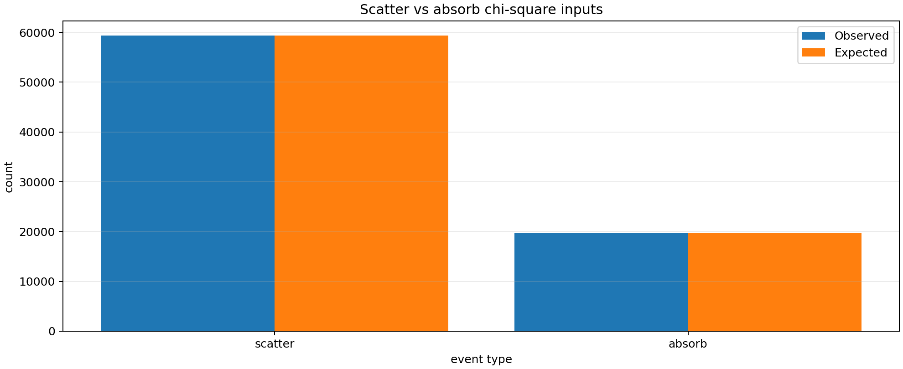 Observed vs expected event classification |
Reference Render Comparison
I also performed an image comparison against Mitsuba for a Cornell-box WDAS cloud scene. Both renderers use the same box geometry, the same area-light position and radiance, the same camera, the same HG phase parameter \(g=0.6\), and the same cloud density data. For Mitsuba, I converted the Nori dense grid wdas_cloud_quarter.grid into Mitsuba's .vol format and loaded it using gridvolume, so both renderers use the same dense density values.
The extinction parameters are matched as closely as possible. In Nori, the medium uses \(\sigma_a = 0.001\) and \(\sigma_s = 10.0\), so \(\sigma_t = 10.001\). In Mitsuba, I use \(\sigma_t\) scale \(10.001\) and albedo \(10.0 / 10.001 = 0.99990001\).
The two renderers are not identical internally. Mitsuba uses its volpath volumetric path tracer and its own medium tracking and path sampling implementation. Nori uses path_mis_vol integrator, which calls VolumeQuery::sampleMediumInteraction() for medium events and evaluates direct lighting at volume scattering points using the LdirectVolume() light-sampling / phase-sampling MIS path. Therefore, this image comparison should be interpreted as an end-to-end validation of the full rendered result, while the chi-square tests above are the stricter validation of the individual sampling distributions.
The Nori image contains slightly higher Monte Carlo noise than the Mitsuba reference even though both images use the same scene and sample count. This is likely due to implementation differences. In a sparse cloud lit by a small area light, these estimator differences can produce different variance at equal spp.
One visible structural difference is the bright halo around the ceiling light in the Nori image. This is likely caused by an area-light implementation mismatch. Nori's AreaLight is two-sided because src/area.cpp uses abs(n dot -wo) in the area-to-solid-angle conversion (following the convention in Assignment 3), while Mitsuba's area emitter follows the mesh normal convention. This affects the immediate light region and contributes to localized per-pixel error near the ceiling light, but it is separate from the medium sampling correctness tested by the chi-square tests.
Image-space comparison:
| Validation case | MSE | MAE | Max error |
|---|---|---|---|
| WDAS cloud Cornell-box render | 0.1395063251 | 0.02409351431 | 14.3225565 |
Reference Render Comparison Images
|
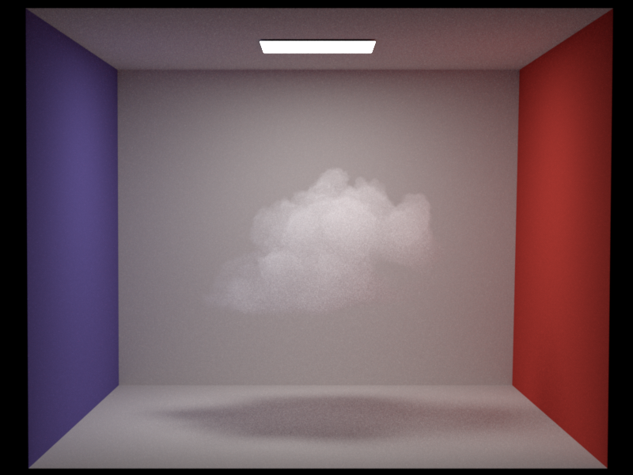 Mitsuba reference |
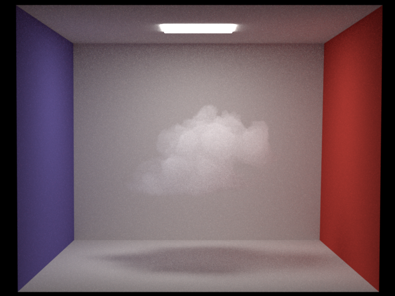 Nori output |
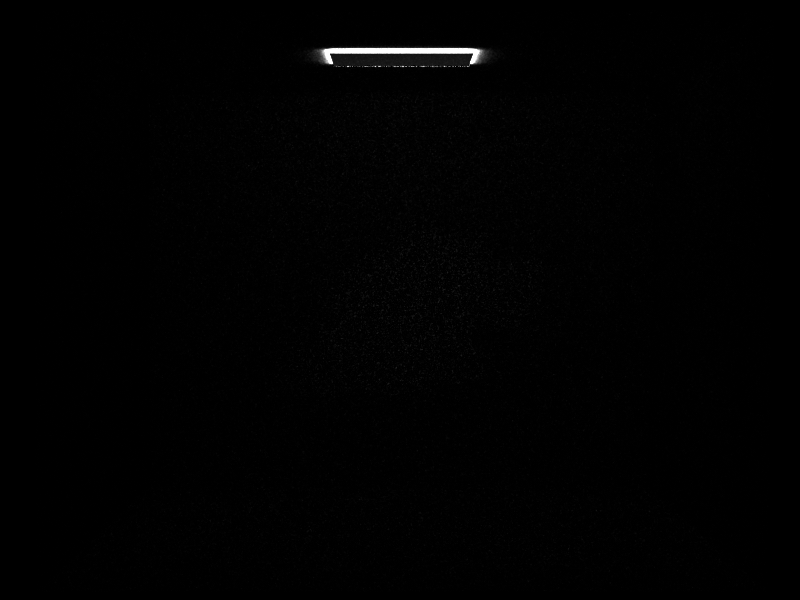 Per-pixel MSE |
Conclusion
These statistical tests directly validate the sampling paths used by the volumetric path tracer. The DHG test validates phase-function sampling, the heterogeneous first-event test validates analytic heterogeneous density evaluation and null-collision delta tracking, and the scatter/absorb test validates event classification after accepted medium interactions. All three tests passed, which provides quantitative evidence that the heterogeneous participating-media sampler is statistically consistent with the expected distributions. The Mitsuba render comparison provides an additional check on the rendered appearance of the full heterogeneous cloud scene.
Supplementary files:
- C++ statistical test executable source:
src/volume_stat_test.cpp - Chi-square visualization script:
final-report/validation/volume/statistical/plot_chi2.py - Statistical test scene description:
final-report/validation/volume/statistical/heterogeneous_delta_test.xml - Nori render-comparison scene:
final-report/validation/volume/comparison/wdas_cloud_cbox_nori.xml - Mitsuba render-comparison scene:
final-report/validation/volume/comparison/wdas_cloud_mitsuba_scene.xml - Nori-to-Mitsuba volume conversion script:
final-report/validation/volume/comparison/nori_grid_to_mitsuba_vol.py - Render comparison script:
final-report/validation/volume/comparison/volume_render_compare.py - Shared Nori dense grid:
final-report/validation/volume/comparison/wdas_cloud_quarter.grid - Converted Mitsuba volume grid:
final-report/validation/volume/comparison/wdas_cloud_quarter.vol - Mitsuba render output:
final-report/validation/volume/comparison/output/mitsuba_output.exr - Nori render output:
final-report/validation/volume/comparison/output/nori_output.exr - Per-pixel MSE image:
final-report/validation/volume/comparison/output/mse_error.exr - Render comparison metrics:
final-report/validation/volume/comparison/output/metrics.txt - Summary results:
final-report/validation/volume/statistical/results/summary.txt - DHG phase chi-square result:
final-report/validation/volume/statistical/results/phase_dhg_chi2.txt - DHG phase histogram:
final-report/validation/volume/statistical/results/phase_dhg_histogram.csv - DHG phase histogram visualization:
final-report/validation/volume/statistical/results/phase_dhg_histogram.png - Heterogeneous delta-tracking chi-square result:
final-report/validation/volume/statistical/results/heterogeneous_delta_chi2.txt - Heterogeneous delta-tracking histogram:
final-report/validation/volume/statistical/results/heterogeneous_delta_histogram.csv - Heterogeneous delta-tracking histogram visualization:
final-report/validation/volume/statistical/results/heterogeneous_delta_histogram.png - Scatter/absorb chi-square result:
final-report/validation/volume/statistical/results/scatter_absorb_chi2.txt - Scatter/absorb counts:
final-report/validation/volume/statistical/results/scatter_absorb_counts.csv - Scatter/absorb count visualization:
final-report/validation/volume/statistical/results/scatter_absorb_histogram.png
Feature Validation: Procedural Cloud Detail
Test Scene
Scene:
I rendered an isolated participating medium against a blue infinite background at 300 x 300 resolution and 1024 spp. The scene uses the path_mis_vol integrator, a directional light, and a single Henyey-Greenstein phase function with g = 0.6. The camera and lighting are fixed across all four renders, so the only intended visual change is the procedural cloud-detail strength.
Controlled variable:
The four validation scenes vary only detailAmount:
| Scene | detailAmount |
|---|---|
procedural_cube_detail_0.xml |
0.0 |
procedural_cube_detail_1.xml |
0.18 |
procedural_cube_detail_2.xml |
0.38 |
procedural_cube_detail_3.xml |
0.62 |
Fixed parameters:
All four scenes use noiseScale = 2.6, warpAmount = 0.28, erosionAmount = 0.30, surfaceWidth = 0.14, densityScale = 0.85, densityThreshold = 0.02, noiseSeed = 4.0, and bakeResolution = 128. They also share the same medium coefficients: sigmaA = 0.02, sigmaS = 20.0, and majorant = 20.02 in each color channel.
Parameter definitions:
detailAmount: validation variable; controls the cube-to-blob shape blend and SDF displacement strength.noiseScale,warpAmount,noiseSeed: control the procedural noise coordinate scale, coordinate warping, and deterministic noise pattern.erosionAmount,surfaceWidth: control high-frequency boundary erosion and the hardness of the density transition.densityScale,densityThreshold,bakeResolution: control final density scale, low-density cutoff, and baked grid resolution.sigmaA,sigmaS,majorant,g: control absorption, scattering, null-collision tracking, and HG phase anisotropy.
Validation
Implementation under test:
This validation exercises the procedural cloud-detail path in src/medium.cpp. When cloudDetail = true, Medium::bakePuffyDensity() evaluates Medium::puffyDensity() over a 3D grid at initialization time and stores the result in m_bakedDensityGrid. During rendering, Medium::density() then uses the baked grid through the same lookup path as other heterogeneous media.
Procedural model:
Let \(\mathbf{p}\) be a point in medium-local coordinates. The implementation normalizes \(\mathbf{p}\) into the base medium bounds, scales it by noiseScale, and applies a small fBM-based coordinate warp. The base shape is represented by a signed-distance field that blends between a cube SDF and a low-frequency blob SDF:
\[b = \mathrm{clamp}\left(\frac{\texttt{detailAmount}}{0.85}, 0, 1\right)\]
\[\phi_\mathrm{base}(\mathbf{p}) = (1-b)\phi_\mathrm{box}(\mathbf{p}) + b\phi_\mathrm{blob}(\mathbf{p}).\]
Here \(\phi_\mathrm{box}\) is the smooth baseline cube shape and \(\phi_\mathrm{blob}\) is the union of several overlapping sphere lobes. This makes detailAmount = 0 preserve the baseline cube, while larger values transition the base shape toward a cloud-like mass.
The procedural detail field combines three terms evaluated at the warped coordinate \(\mathbf{q}\):
\[d(\mathbf{p}) = 0.25 + 0.45\,n_\mathrm{large}(\mathbf{p}) + 0.65\,n_\mathrm{cellular}(\mathbf{p}) - \texttt{erosionAmount}\,n_\mathrm{fine}(\mathbf{p}).\]
The three noise terms have different roles. \(n_\mathrm{large}\) is low-frequency fBM, implemented as fbm(q * 0.55) - 0.5, and creates broad puff variation. \(n_\mathrm{cellular}\) is inverted Worley-style noise, implemented as 1 - worley(q * 1.65) - 0.5, and creates cellular cloud structure. \(n_\mathrm{fine}\) is high-frequency fBM, implemented as fbm(q * 7.0), and is subtracted as an erosion term to cut smaller detail into the boundary.
The final displaced SDF is:
\[\phi_\mathrm{detail}(\mathbf{p}) = \phi_\mathrm{base}(\mathbf{p}) - \texttt{detailAmount}\,r\,d(\mathbf{p}),\]
where \(r\) is the reference length scale of the medium bounds.
Finally, the displaced SDF is converted into density using a smooth transition band:
\[\rho(\mathbf{p}) = \mathrm{clamp}\left( \mathrm{smoothstep}(\texttt{surfaceWidth}\,r, -\texttt{surfaceWidth}\,r, \phi_\mathrm{detail}(\mathbf{p})) \cdot \texttt{densityScale}, 0, 1 \right),\]
Points well inside the displaced SDF get density near densityScale; points well outside get density near zero. The resulting density is baked into m_bakedDensityGrid, then used by the standard heterogeneous-medium render path.
Validation method:
This is a controlled ablation validation. The four renders use the same camera, light, phase function, extinction coefficients, random seed, and procedural noise parameters. Since the only controlled variable is detailAmount, the progressive change from smooth cube to puffy cloud verifies that the procedural path is affecting the density field in the intended way. The earlier heterogeneous-volume section provides the quantitative statistical validation of the underlying medium sampling and delta tracking. This section isolates the additional procedural density shaping and verifies its rendered effect under fixed conditions.
Note on converted VDB grids:
I also found that this procedural-detail path worked more predictably on the controlled box/blob validation medium than on clouds converted from VDB to .grid format. The main reason is that the current method is SDF-based: it builds a box/blob base shape and displaces that shape with fBM and Worley noise. This is well suited for generating detail from a simple base volume, but converted VDB grids already contain complex density structure and boundaries. Applying another SDF-style displacement on top of them can over-erode or distort the original cloud shape.
Procedural Detail Sweep Images
|
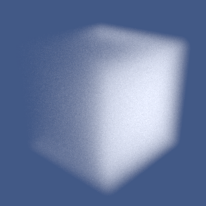 detailAmount = 0.0 |
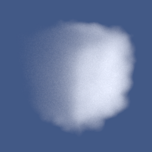 detailAmount = 0.18 |
|
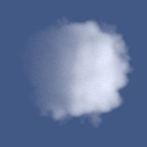 detailAmount = 0.38 |
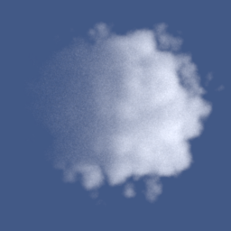 detailAmount = 0.62 |
Conclusion
The sweep shows the expected behavior of the procedural cloud-detail control. The visible progression provides direct evidence that cloudDetail, puffyDensity(), and the runtime baked-density lookup are connected correctly.
Supplementary files:
- Procedural validation scene:
final-report/validation/procedural/procedural_cube_detail_0.xml - Procedural validation scene:
final-report/validation/procedural/procedural_cube_detail_1.xml - Procedural validation scene:
final-report/validation/procedural/procedural_cube_detail_2.xml - Procedural validation scene:
final-report/validation/procedural/procedural_cube_detail_3.xml - Baseline render:
final-report/validation/procedural/procedural_cube_detail_0.exr - Mild-detail render:
final-report/validation/procedural/procedural_cube_detail_1.exr - Medium-detail render:
final-report/validation/procedural/procedural_cube_detail_2.exr - Strong-detail render:
final-report/validation/procedural/procedural_cube_detail_3.exr - Implementation:
src/medium.cpp - Medium interface:
include/nori/medium.h
References
- Mitsuba 3 documentation:
https://mitsuba.readthedocs.io/ - Mitsuba bitmap texture plugin:
https://mitsuba.readthedocs.io/en/stable/src/generated/plugins_textures.html - Mitsuba integrator plugins:
https://mitsuba.readthedocs.io/en/stable/src/generated/plugins_integrators.html - PBRT input file texture reference:
https://pbrt.org/fileformat-v4 - Poly Haven, Autumn Field Pure Sky HDRI:
https://polyhaven.com/a/autumn_field_puresky - Poly Haven, Qwantani Afternoon Pure Sky HDRI:
https://polyhaven.com/a/qwantani_afternoon_puresky - Walt Disney Animation Studios Clouds dataset:
https://disneyanimation.com/resources/clouds/ - Sketchfab, Stylized Outdoor Explorer Hiker Character:
https://sketchfab.com/3d-models/stylized-outdoor-explorer-hiker-character-963b29cbb3a9403daa62dfb54b0cb81d - Superhive Market, Cloudscapes:
https://superhivemarket.com/products/cloudscapes - Sketchfab, Sci-Fi Building Tower Skyscraper:
https://sketchfab.com/3d-models/sci-fi-building-tower-skyscraper-c2ab95f390e4452dbc3a033b5a34e1c1
Final Render
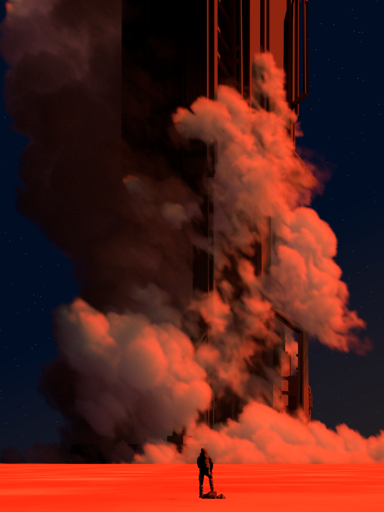